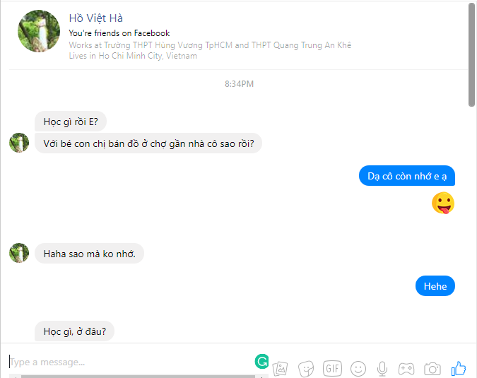
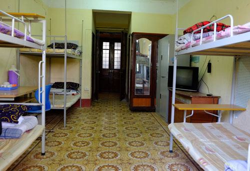

Gặp lại cô giáo cũ .. trên FB <3
Hâyza, cuối tháng năm đầu tháng sáu rồi, lại một mùa tổng kết, một mùa chia xa của lũ nhóc cấp 3 rồi. Ngồi vừa ôn thi cuối kì vừa lướt newsfeed phây-búc bây giờ ngập tràn ảnh kỉ yếu, video kỉ yếu của bọn nhỏ, và còn cả những memories của bạn bè, và cả của thầy cô. Và nhờ Facebook mà hôm nay tôi nối lại liên lạc được với cô giáo cũ của tôi hồi lớp 10. Một bài post trên FB một tag tên "H.V.H" nghe quen quen nhỉ, nhấn vào cái hình, zoom lên một tí thì đúng là cô rồi cô thật rồi. Vội Nhấn vào profie của cô và send an invitation tới cô, vài giây sau cô đồng ý. Đang ngồi thẫn thờ lướt lướt thì Messenger Box báo tin nhắn đến, và ... là cô, cô inbox cho em ư???. "Học gì rồi E?" - chưa kịp trả lời là đang học cốt thì tin thứ hai nối tiếp: "Với bé con chị bán đồ ở chợ gần nhà cô sao rồi?"....
 ...Cạn lời...
Hmm, hóa ra là cô nhớ con bé con của cô bán đồ ngoài chợ. Mà con bé nào nhỉ, chẹp chẹp con bé con chị bán đồ ở chợ nào mà sao cô lại hỏi em nhỉ?. À, nhớ rồi, nhớ rồi :( cô còn nhớ em là em mừng lắm rồi cô ạ, còn cô nhớ con bé đó thì em chắc không vui nổi rồi :((. Cũng hơn hai năm rồi cô ạ, con bé con chị bán đồ ở chợ gần nhà cô giờ không còn ngồi sau xe thằng nhỏ ốm nhách đeo kiếng dày cộm năm nào đâu cộ ạ. Giờ em lên đời rồi cô ơi, xe bốn bánh, tài xế riêng, ở cao ốc mười mấy tầng ngước mỏi cổ rồi cô ơi. Giờ em mà buồn muốn làm một vòng Sì Gòn thì chỉ cần vài phút thôi là tài xế em đến, số 8, số 19, 53, 50, 30 đưa em đi khắp Sì Gòn này cô ạ :D.
Đây là khu em sống :)
 Và đây là nhà em ở :P
Cho nên đây là xe em đi :v
Thôi quên con nhỏ bán đồ khô ngoài chợ đó đi cô ơi. Thật may mắn vì nối lại được liên lạc với cô. Ahihi, nhiều năm rồi từ lúc cô chuyển trường tới giờ mới liên lạc được lại với cô. Bao nhiêu kỉ niêm ùa về cô ơi, cô giáo dạy văn năm nào giờ vẫn xinh đẹp trẻ trung như vậy. Cô định cư ở Sài Gòn 3 năm rồi, em cũng vào Sì phố gần 2 năm nay rồi mà không qua thăm cô thật là có lỗi với cô quá, so sorry cô. Qua hè này em sẽ lên thành phố gần ngay chỗ cô, mong rằng sẽ sớm được gặp cô, để được ôn lại những kỉ niệm thời trẻ trâu và em sẽ kể cho cô nghe tất cả những gì em đã trải qua, và những gì em đạt được từ lúc em với con nhỏ con cô bán đồ khô kia không còn đi chung trên con Sirus 50 cà tàng năm xưa. Hẹn gặp lại cô vào một ngày không xa. Miss u Ms.H <3